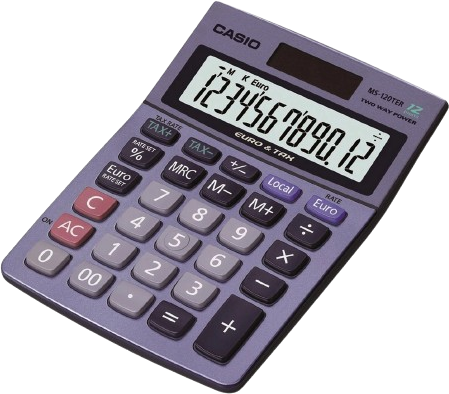

|
Chapitre 3
|
- Priorités opératoires
|
Activité Introduction

Louis utilise une calculatrice 4 opération comme celle ci-contre pour faire un exercice de mathématiques.
Il doit effectuer le calcul suivant : $8 - 3\times2 + 6$
En écrivant se calcul dans l'ordre sur sa calculatrice il obtient 16.
Effectue ce calcul en une seul opération sur ta calculatrice collège.
-
Que remarques-tu ?
-
Quel est le problème avec le calcul de Louis ?
Vocabulaire des opérations :
Le résultat d'une addition est appelé somme Les éléments qui composent une addition sont appelés termes.
Le résultat d'une soustraction est appelé différence. Les éléments qui composent une soustraction sont appelés termes.
Le résultat d'une multiplication est appelé produit Les éléments qui composent une multiplication sont appelés facteurs.
Le résultat d'une division est appelé quotient.
Cas particulier de la division euclidienne :
La division euclidienne ne s'effectue qu'avec des nombres entiers.

Avec Reste < Diviseur
Enchaînement d'opérations :
Calcul sans parenthèses
Pour calculer une suite d'additions et de soustractions sans parenthèses, on fait les opérations une par une dans l'ordre où elles sont écrites.
Exemple :
$23-12+9=11+9=20$
Pour calculer une suite multiplications et de divisions sans parenthèses, on fait les opérations une par une dans l'ordre où elles sont écrites.
Exemple :
$27\div3\times9=9\times9=81$
La multiplication et la division sont prioritaires par rapport à l'addition et à la soustraction.
Exemples :
-
$4\ + $
$3\times7$
$=4+21=25$
-
$36\div3$
$-$
$5\times2$
$=12-10=2$
Utilisation des parenthèses :
Dans une suite de calculs comprenant des parenthèses, on effectue d'abord les calculs entre parenthèses.
Exemples :
-
$25\ - $
$(12+9)$
$=25-21=4$
-
$36\ -(2\times$
$(15-9)$
$) = 36\ -$
$(2\times6)$
$=36-12=24$
Calcul dans un quotient :
Lorsqu'on veut calculer un quotient, on commence par calculer le numérateur et le dénominateur avant d'effectuer le calcul du quotient.
Exemple :
$\large{\frac{12+3}{9-4}=\frac{15}{5}}=3$